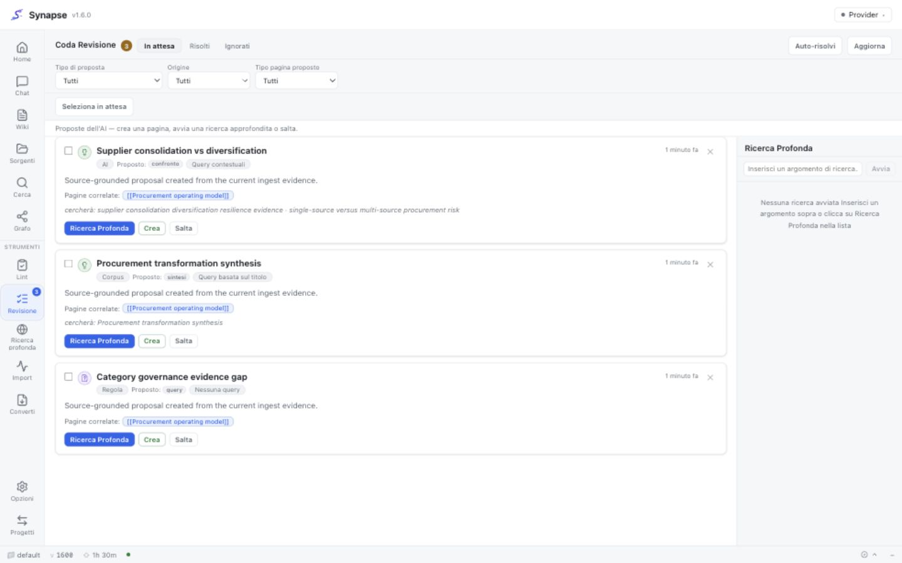
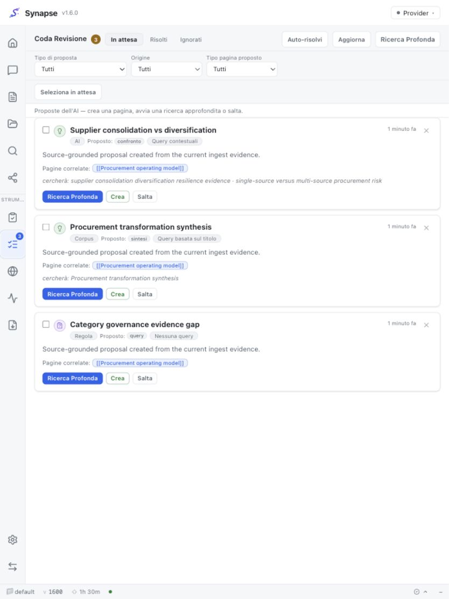
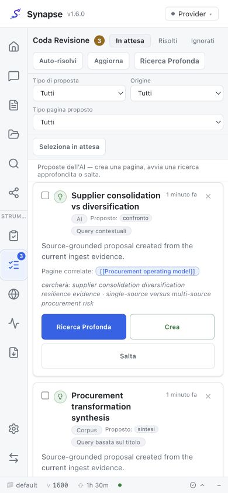
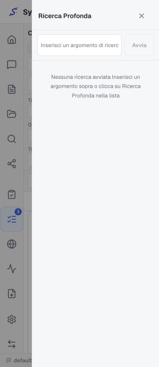
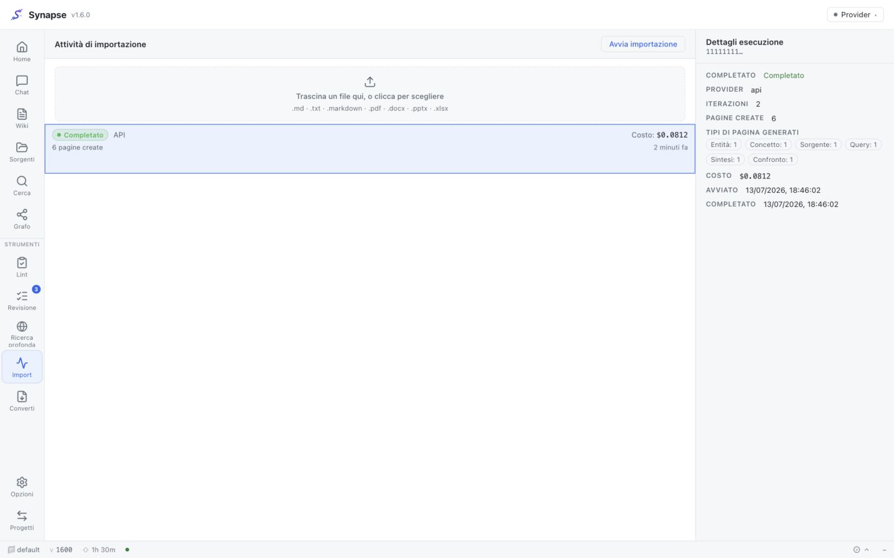

Synapse v1.6.0 — Source-grounded generation lifecycle parity¶
v1.6.0 closes the structural causes behind the generative discrepancies observed between Synapse
and nashsu/llm_wiki. The objective is lifecycle parity—not identical prose or mechanical page
counts—with strong evidence gates, bounded costs and no automatic cleanup of existing vault data.
What was discrepant¶
- Direct generation was artificially restricted. Synapse's shared prompt allowed only entity, concept and source pages, while LLM Wiki could generate query, comparison and synthesis during ingest. Equal inputs could therefore never produce equal page-type distributions.
- Delegated and orchestrated Review saw different evidence. The CLI route omitted the raw source and constructed a synthetic Analysis from titles; API/Local used typed Stage-1 analysis.
- Rule proposals starved detailed AI proposals. Missing-link items were merged first under one small cap, crowding out higher-value comparisons, contradictions and research suggestions.
- Review hid decision provenance. Clients could not tell rule from AI/corpus proposals or see whether Create ultimately wrote a different effective PageType.
- Corpus grouping was too permissive. Untagged pages could share a synthetic bucket, allowing unrelated comparisons/syntheses across topics.
- Corpus runs were not idempotent. Identity depended on provider-authored titles; rerunning—or forcing with a changed title—could create another file for the same member set.
- The UI obscured weak query proposals and run state. Filters were incomplete, title-only searches looked like contextual queries, mobile Review was compressed and corpus polling did not reliably reach a terminal state.
What changes¶
- All providers receive one six-type, source-grounded generation contract.
- Delegated Review receives bounded source/exact-run page evidence and omits unavailable Analysis.
- Rule/AI Review lanes use independent 8/12 caps under a 20-item ceiling; AI wins duplicates.
- Migration 0031 adds proposal origin, stable corpus generation identity and per-run PageType counts.
- Corpus clusters require a shared real domain, are capped independently by
max_candidates, and can run in provider-freereview-onlymode. - A stable SHA-256 key based on output kind and canonical member paths survives database rebuilds; the database unique index and deterministic file slug make normal and forced reruns idempotent.
- Review shows origin, proposed/effective type and query quality; filters are server-side; the Deep Research surface becomes a drawer at narrow viewports.
- Home offers Generate now and Propose only, polls only during active work and reports duplicates/untagged candidates.
Upgrade¶
- Back up Postgres and the vault using the normal deployment procedure.
- Deploy backend and frontend v1.6.0 together.
- Run
alembic upgrade head(migration0031). The migration is additive. - Configure/backfill the domain vocabulary before expecting automatic corpus pages.
- Optionally call
GET /ops/synthesize/audit?max_pages=500and review the dry-run report.
Existing Review items are preserved with proposal_origin=legacy. Existing corpus pages remain
untouched and unkeyed. No migration or startup hook deletes, merges, renames or heuristically tags
legacy pages.
Verification evidence¶
- Full backend suite: 2,707 passed, 4 skipped; focused lifecycle tests cover prompts, delegated evidence/cost accounting, proposal caps, schema/API, idempotency, domain guards, candidate bounds, single-flight and dry-run audit.
- Full frontend suite: 2,354 passed; ESLint, TypeScript and production build passed.
- Generated OpenAPI and ER schema include migration 0031 contracts.
- MkDocs strict build and
cargo check --lockedpassed. - Browser QA used a local 1.6.0 build with deterministic mock data; a fresh tab reported zero console warnings/errors. The installed 1.5.6 app and production vault were not mutated.
Browser evidence¶





See ADR-0073 and ADR-0074 for the decisions and rejected alternatives.